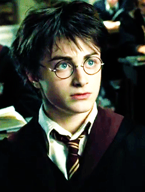
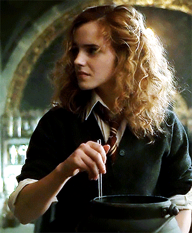
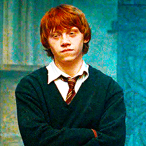
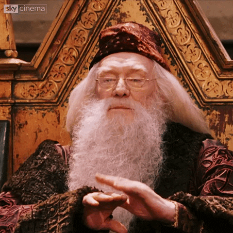
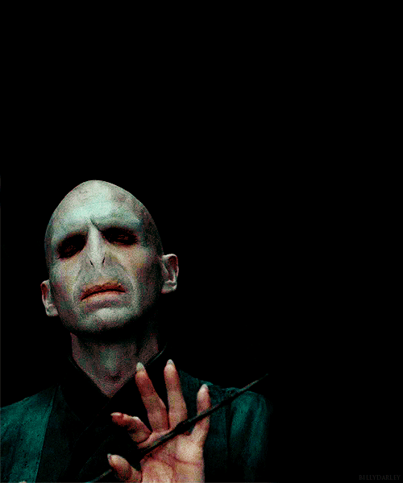

¿QUE ES HOGWARTS?
Hogwarts es una escuela a la cual asisten jóvenes magos para desarrollar sus habilidades mágicas. El edificio, situado en las colinas de Escocia, es visto como un antiguo edificio en ruinas con un cartel que dice "cuidado, ruinas peligrosas", por las personas ajenas a poderes mágicos (más comúnmente conocidos como muggles). Tiene siete plantas, varias torres, escaleras que cambian de posición a su antojo y extensos terrenos que contienen un lago, un bosque, llamado El Bosque Prohibido, y varios invernaderos con fines botánicos. Además de sus numerosas aulas en las que se imparten las clases de pociones, transformaciones, Defensa contra las Artes Oscuras, Historia de la magia y demás asignaturas por asistentes calificados, el castillo posee lugares con fines diferentes. Durante más de mil años, los alumnos fueron distribuidos a su llegada, en las diferentes casas, mediante el veredicto del Sombrero Seleccionador, con los apellidos de los cuatro fundadores de la escuela: Gryffindor, donde van los valientes de corazón; Hufflepuff, donde asisten los estudiantes trabajadores, honestos, amantes de los animales y la naturaleza; Ravenclaw, a donde pertenecen los inteligentes y sabios; y Slytherin, donde son audaces y ambiciosos. Durante la escolaridad de Harry, Albus Dumbledore es el director y los principales jefes de casa son los profesores McGonagall, Sprout, Flitwick y Snape (luego sustituido por Slughorn).
Harry Potter

Harry James Potter es el protagonista de la serie de libros Harry Potter de J. K. Rowling. En su undécimo cumpleaños se entera de que es un mago y la trama de los libros se centra principalmente en los años en los que el huérfano Potter concurre al Colegio Hogwarts de Magia y Hechicería para practicar bajo la guía del director Albus Dumbledore y demás profesores. Allí, Harry también descubre que ya es famoso en todo el mundo mágico y que su destino está atado al de Lord Voldemort, el mago tenebroso mundialmente temido y asesino de su madre y su padre.
Hermione Granger

Hermione es la chica más inteligente de su curso en el Colegio Hogwarts de Magia y Hechicería. Al igual que Harry y Ron pertenece a la casa de Gryffindor, pese a que el sombrero seleccionador consideró colocarla en Ravenclaw debido a sus prominentes capacidades intelectuales. Es de origen muggle: sus padres son ambos dentistas y no tienen ninguna relación con el mundo de los magos. Le encanta leer, sin embargo, no sabe dibujar. No le gusta romper las reglas salvo por alguna emergencia y no es especialmente entusiasta del quidditch, el deporte mágico, aunque apoya a sus amigos durante el campeonato. Tiende a creer que todo aquello que merece la pena saber se puede aprender de un libro y es escéptica respecto a todo lo que no se pueda comprobar con ciencia, despreciando, por tanto, la asignatura de adivinación impartida por la profesora Sybill Trelawney. Hermione conoció a Harry Potter y a Ron Weasley en el Expreso de Hogwarts.
Ron Weasly

Es un personaje que se caracteriza por ser fiel, honrado, prudente, divertido, celoso, sarcástico, algo cascarrabias… pero ante todo un amigo leal. Le encanta el ajedrez, el Quidditch, las bromas y estar con Harry y Hermione. Detesta las arañas, a algunos Slytherin (por ejemplo Draco Malfoy), la ropa de segunda mano que tiene que ponerse y que Hermione le corrija. Se le da bien el ajedrez mágico y la estrategia, imitar voces y acentos y volar en escoba. Sobreprotege a su hermana Ginny. Peca de celoso y es muy inseguro debido a los méritos acumulados por sus hermanos y la pobreza de su familia. Ron es muy optimista y hasta cierto punto despreocupado, aunque a veces le cuesta sobrellevar el hecho de que su familia no tenga mucho dinero. Esto hace que muchas de sus cosas estén usadas y viejas, ya que las hereda de sus hermanos mayores, y que algunos alumnos de Hogwarts lo desprecien por ello, en especial Draco Malfoy y los de Slytherin.
Albus Dumbledore

El personaje, presentado como el mago más poderoso de toda la saga y comparable a antagonistas tales como Grindelwald o lord Voldemort, es también el más moral de todos: su lema consiste en la afirmación de que «el amor es la magia más importante y poderosa del mundo». Aunque parece un anciano paternal, sabio y protector, en realidad el personaje tiene un plan ideado a lo largo de veinte años para destruir al tenebroso lord Voldemort —ambos personajes tienen un breve enfrentamiento en el libro Harry Potter y la Orden del Fénix—. Es, durante gran parte de la historia, el director de Hogwarts y el creador de la Orden del Fénix.
Voldemort

El nombre de nacimiento de lord Voldemort es Tom Marvolo Riddle. Lord Voldemort desaparece al intentar asesinar a Harry Potter el 31 de octubre de 1981. En el cuarto libro de la saga, o sea entre los años 1994 y 1995, Voldemort, con ayuda de Colagusano o Peter Pettigrew, renace en el cementerio de Pequeño Hangleton, donde esta enterrado Tom Riddle Sr., el padre de lord Voldemort. Al renacer su aspecto es muy diferente al de sus años en Hogwarts. Cuando estaba estudiando en la famosa escuela, se tenía bien sabido que era un muchacho apuesto. En cambio, al renacer, su piel era más blanca que una calavera, sus ojos eran rojizos y como las de una serpiente ya que este era un gran fanático de este animal; su nariz estaba tan aplastada como la de una serpiente y sus dedos eran anormalmente largos. Según dicen, el prodigioso mago Albus Dumbledore, creía que el aspecto del Señor Tenebroso había cambiado al crear tantos Horrocruxes, ya que era antinatural separar el alma en tantas partes, aunque hay otra teoría que sustenta que su nuevo aspecto se debe a su creciente maldad.